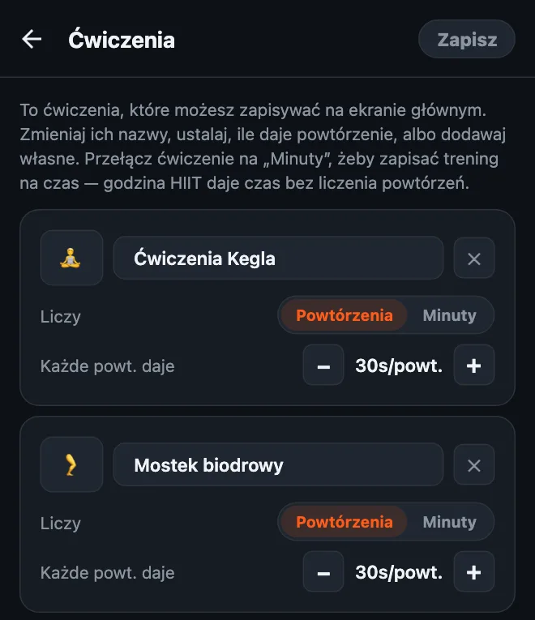
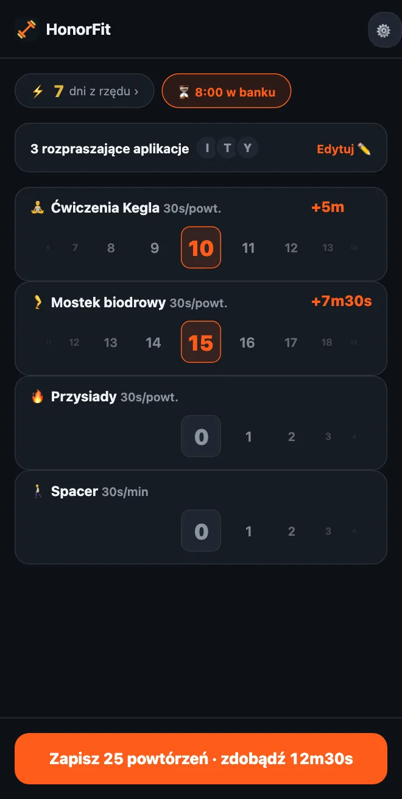

Odblokuj telefon ćwiczeniami Kegla
Cześć wszystkim! Zrobiłem HonorFit, bo chciałem, żeby między mną a Instagramem stały pompki, ale bez stawiania telefonu tak, żeby kamera mogła je liczyć (robienie tego na stacji benzynowej nie było moim najlepszym momentem, haha). Robisz powtórzenia, sam je zapisujesz i aplikacje się odblokowują.
Tylko że pompki nie są dla każdego. A jedne z ćwiczeń, które najlepiej pasują do tego pomysłu, to wcale nie pompki, tylko ćwiczenia Kegla i mostek biodrowy. Oto dlaczego i jak to ustawić.
Dlaczego ćwiczenia Kegla tak dobrze pasują do systemu na słowo honoru
Ćwiczeń Kegla nikt nie widzi. Ani osoba obok ciebie w autobusie, ani ludzie z pracy, a już na pewno nie kamera w telefonie. Aplikacja, która liczy powtórzenia kamerą, dosłownie nie jest w stanie ich policzyć.
HonorFit nawet nie próbuje. Działa na słowo honoru: robisz ćwiczenia, przewijasz koło do liczby, którą zrobiłeś, i gotowe. Możesz więc zarabiać czas na TikToka na spotkaniu, w kolejce w sklepie albo na kanapie i nikt się nie zorientuje.
I rozwiązuje to problem, o którym mówią wszyscy: „Wiem, że trzeba je robić, tylko ciągle zapominam”. Jeśli sięgasz po telefon wiele razy dziennie (nie oceniam, sam tak mam), teraz każdy z tych razów jest przypomnieniem.
Mostek biodrowy nie jest niewidzialny, ale łatwo go zrobić na podłodze, a nawet w łóżku, nie potrzebujesz sprzętu i świetnie łączy się z ćwiczeniami Kegla.
Jak to ustawić
Własne ćwiczenia są częścią HonorFit Pro (w USA 3 USD miesięcznie albo 19,99 USD jednorazowo; ceny różnią się w zależności od kraju i waluty, a sklep pokaże ci twoją). Darmowa wersja ma pompki, brzuszki, podciąganie i przysiady. Jeśli masz Pro:
- Stuknij zębatkę na ekranie głównym, a potem kartę Ćwiczenia.
- Stuknij ＋ Dodaj ćwiczenie, stuknij nazwę i wpisz Ćwiczenia Kegla.
- Dodaj kolejne i nazwij je Mostek biodrowy.
- Ustaw Każde powt. daje przyciskami −/+ (moje propozycje są niżej).
- Opcjonalnie: stuknij kwadracik z emoji, żeby wybrać ikonę. Ja wybrałem 🧘 dla ćwiczeń Kegla i 🦵 dla mostka. Do wyboru jest ok. 40 emoji związanych z fitnessem, więc 🍑 nie ma, sorry!
- Usuń te, których nie będziesz używać, przyciskiem ✕ (może podciąganie?), i stuknij Zapisz.

Cały opis edytora, łącznie z treningami na czas, znajdziesz we wpisie jak dostosować ćwiczenia w HonorFit.
Ile czasu przed ekranem powinno dawać każde powtórzenie?
Ja zacząłbym od tego:
| Ćwiczenie | Każde powtórzenie daje | Typowa seria daje |
|---|---|---|
| 🧘 Ćwiczenia Kegla | 30 sekund | 10 powtórzeń = 5 minut |
| 🦵 Mostek biodrowy | 30 sekund | 15 powtórzeń = 7m30s |
| 🚶 Spacer (na czas) | 30 sekund za minutę | 20-minutowy spacer = 10 minut |
Seria 10 ćwiczeń Kegla i 15 mostków daje więc około 12 i pół minuty. Potem dopasuj. Jeśli czas wpada za łatwo, obniż wartości. Jeśli łapiesz się na zapisywaniu powtórzeń, których nie zrobiłeś, cena jest za wysoka, więc ją obniż.

Jedna rzecz o ćwiczeniach Kegla: więcej nie znaczy lepiej. Serwisy o zdrowiu, takie jak MedlinePlus i Cleveland Clinic (po angielsku), zwykle mówią o seriach po około 10 powtórzeń, kilka razy dziennie, i piszą, że przesadzanie może sprawić, że mięśnie będą zbyt napięte. Więc proszę, nie róbcie z tego 100 ćwiczeń Kegla za godzinę YouTube'a! Dlatego dałbym im przyzwoitą wartość za powtórzenie, a większe porcje czasu zostawił mostkowi biodrowemu, przysiadom albo spacerowi.
Podstawowe ruchy
Jestem programistą, nie trenerem ani fizjoterapeutą, więc to tylko ogólna idea. Pod linkami powyżej znajdziesz porządne instrukcje.
- Ćwiczenia Kegla: napnij mięśnie, którymi powstrzymujesz siusianie, przytrzymaj kilka sekund, a potem całkiem rozluźnij na kilka sekund. To jedno powtórzenie. Oddychaj normalnie i staraj się nie spinać brzucha, ud ani pośladków. (Zatrzymanie strumienia moczu to sposób, żeby raz znaleźć te mięśnie, a nie coś do regularnego ćwiczenia).
- Mostek biodrowy: połóż się na plecach, ugnij kolana, stopy płasko na podłodze. Napnij pośladki i unieś biodra, aż ciało utworzy prostą linię od barków do kolan, zatrzymaj się na chwilę i powoli opuść. To jedno powtórzenie. Niektórzy lubią dorzucić ćwiczenie Kegla na górze.
Jeśli jesteś w ciąży, niedawno rodziłaś, masz bóle w obrębie miednicy albo ćwiczenia Kegla sprawiają ci ból, najpierw porozmawiaj z lekarzem albo fizjoterapeutą uroginekologicznym. Powiedzą ci, co jest dobre dla twojego ciała, a czasem odpowiedź brzmi „na razie bez ćwiczeń Kegla” i to jest w porządku. Możesz ustawić HonorFit pod to, co polecą zamiast nich.
Kilka wskazówek
- Trzymaj się trzech, czterech ćwiczeń. Coś w stylu Ćwiczenia Kegla, Mostek biodrowy, Przysiady i Spacer ogarnia siedzenie, leżenie i bycie poza domem. Każde ma własne koło, więc im mniej, tym prościej.
- Na dni, kiedy wychodzisz z domu, użyj treningu na czas. Przestaw ćwiczenie na Minuty (albo stuknij propozycję Spacer lub Joga), żeby spacer czy zajęcia też dawały czas.
- Zapisane zestawy (Pro, włączasz w Ustawieniach) pozwalają zapisać do 3 kombinacji powtórzeń, np. „10 ćwiczeń Kegla + 15 mostków”, i wczytać je jednym stuknięciem.
- Blokuj jedną czy dwie aplikacje, a nie wszystko. Tę, która zjada ci wieczory.
Jeśli ćwiczenia Kegla też nie są dla ciebie, opisałem też łagodne ćwiczenia, które zrobisz nawet przy biurku.
HonorFit Blocker to darmowa blokada aplikacji na iPhone'a i Androida. Na słowo honoru, bez kamery, nic nie opuszcza twojego telefonu. Własne ćwiczenia, takie jak ćwiczenia Kegla, są w Pro. Może komuś z was się spodoba!